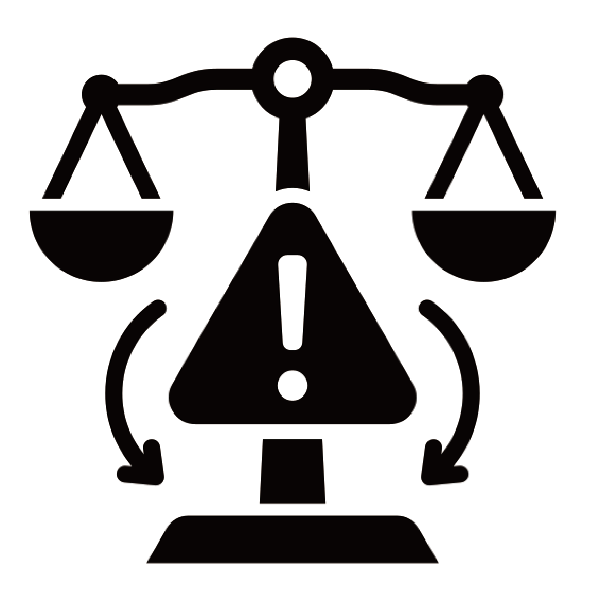

관음성 예능이 부추긴 비난 문화
관찰 예능의 증가와 비난 문화의 심화
Click & Scroll
Click & Scroll
스튜디오에서 연예인 진행자와 게스트가 진행하는 방식의 기존 버라이어티 예능
진부함을 덜기 위해 스튜디오에서 벗어나 야외에서 진행되는 버라이어티형 예능으로 발전
자극적인 콘셉트를 줄이고 연예인의 소소한 일상을 가감 없이 보여주는 관찰 예능 유행
연예인들의 일상이 부풀려지자 일반인의 일상을 보여주는 관찰 예능 유행
깨진 유리창 이론을 일반인 관찰예능에 그대로 대입해보면 '문제가 있는 일반인'들에게는 비난을 해도 괜찮다는 심리가 적용된 것으로 볼 수 있다. 심지어 방송에서 일반인이 전문가에게 솔루션을 받는 장면은 일반인들에게 가해지는 비난에 정당성을 부여하여 시청자들이 자신이 절대적 선의 영역에 있다는 착각에 빠지도록 만든다. 프로그램에 깊이 이입하고 출연진을 지속적으로 비난하는 일부 시청자들은 어리석은 일반인 출연진들에게 교정을 권하는 자비로운 자신에 대한 나르시시즘에 빠져 자신의 삶으로부터 멀어지고 타인의 삶에 집중하게 된다.
타인의 삶에 집중하여 그들을 교화시킨다고 자신의 삶이 풍요로워지는 것은 아니다. 우리는 문제의 당사자가 되어 보지 않는 이상 그들을 완전히 이해할 순 없다. 당사자의 삶의 맥락을 이해하지 못한 상태에서 무조건적으로 비난하고 훈수를 두는 것은 오히려 그에게 상처를 주고 그와 맞지 않는 삶을 강요하는 행동이다. '그들의 올바름'을 강요했기 때문이다. 강요된 올바름은 그 누구의 삶도 성장시키지 않는다. 물론 조언을 일부 받아들이기도 해야 한다. 그리스 신화 중 오이디푸스가 조언해주는 주변인들을 배척했다가 스스로 진실을 마주하기로 결심했을 때 주변인의 조언을 받아들이고 테베를 떠나겠다는 결정을 내린다. 이처럼 걱정에서 비롯된 조언은 타당한 근거로서 받아들였을 때 진실, 즉 자신의 올바름을 추구할 수 있도록 하는 발판이 되기도 한다. 하지만, 오이디푸스가 자신의 진실을 찾을 수 있었던 근본적인 이유는 자신의 진실을 파헤치려 들었기 때문이다. 우리는 거울을 보지 않는 이상 자신의 얼굴을 확인할 수 없다. 그러니 자신이 한 조언만큼이나 좋은 사람으로 성장하고 싶다면 남의 삶보다 자신의 삶에 집중해야 한다. 타인의 삶이 아닌 자신의 삶에도 발판이 되어줄 조언을 할 수 있을 때 비로소 진정한 삶의 방향을 정할 수 있게 될 것이다.